総本山道場にて昇段審査会を執り行いました
５月３１日、鹿児島県南大隅町の 総本山道場 に於いて 昇段審査会 を執り行いました。受験された皆様、お疲れ様でした。日頃の稽古で培った技と心を存分に発揮された、見応えのある審査会となりました。
形（かた）※定められた一連の技を演武する稽古法、棒術（ぼうじゅつ）※六尺棒を用いた武器術、組演武と、受験生それぞれが積み重ねてきた成果を披露し、一つひとつの所作に真剣な眼差しが光りました。
このたび昇段されました
日頃より楊心門空手道を支えてくださっている先生方が、それぞれ昇段を果たされました。心よりお祝い申し上げます。
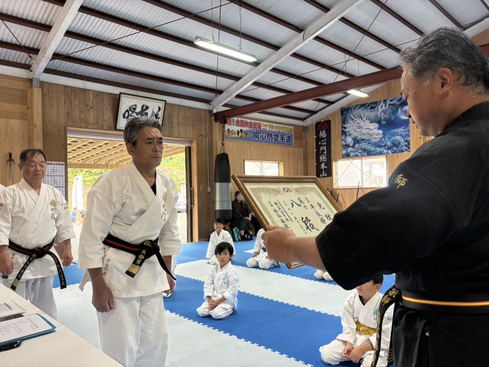
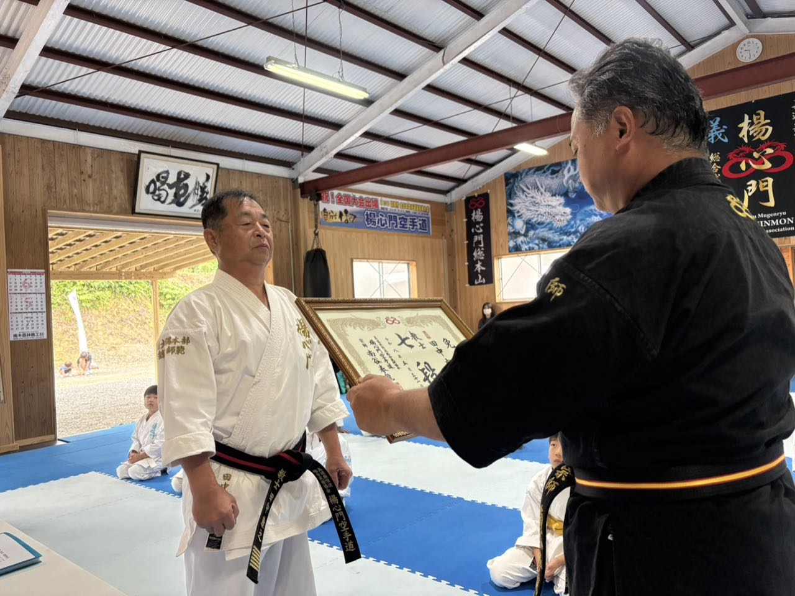
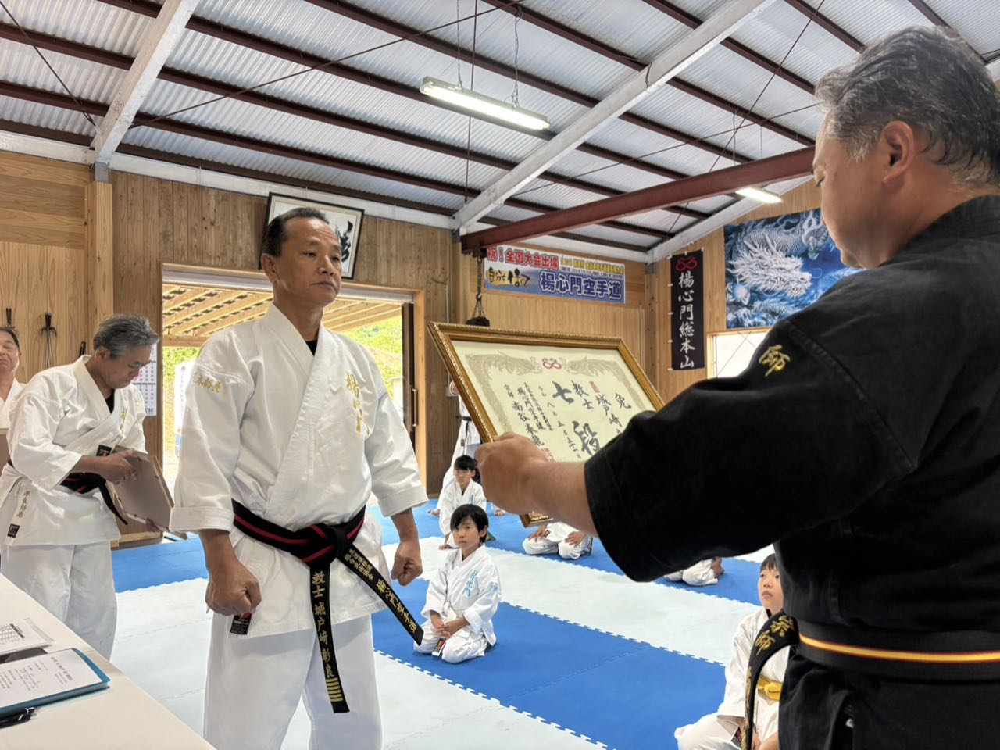
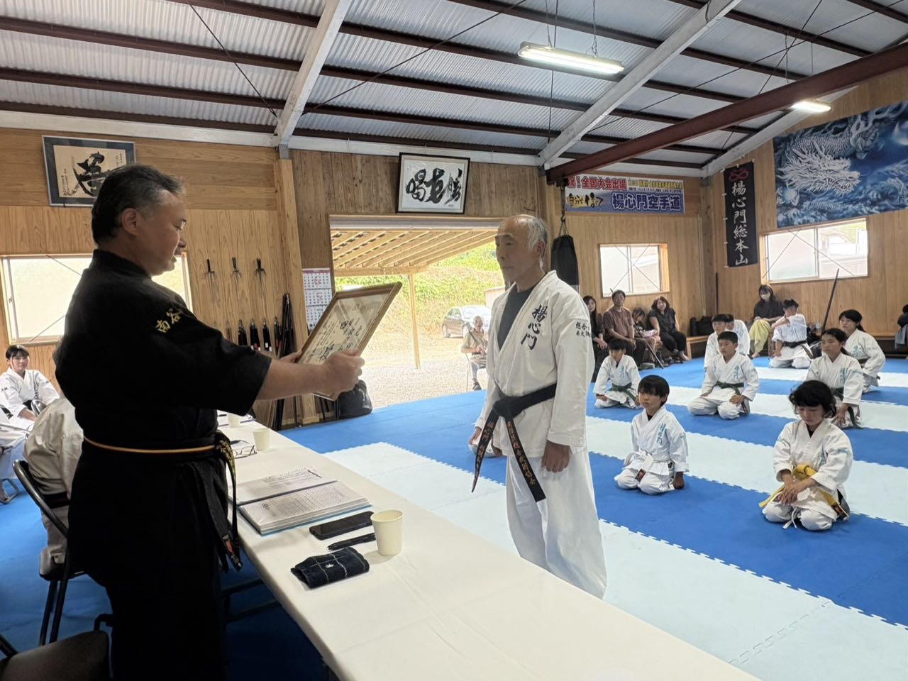
四段受験に臨まれた 相羽 和幸 師範は、これまでの努力の成果を遺憾なく発揮され、素晴らしい形・棒の実技を披露されました。更なるご活躍をご期待申し上げます。
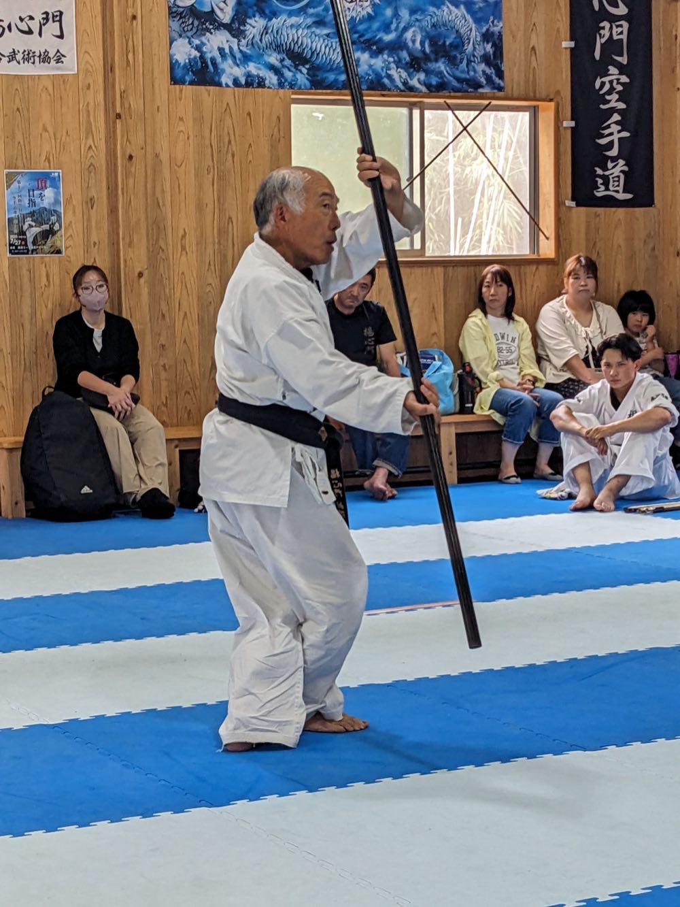
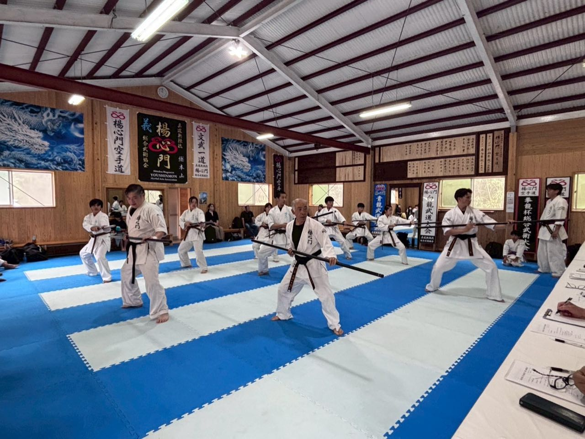
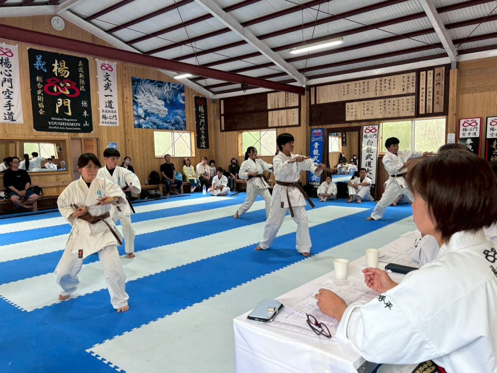
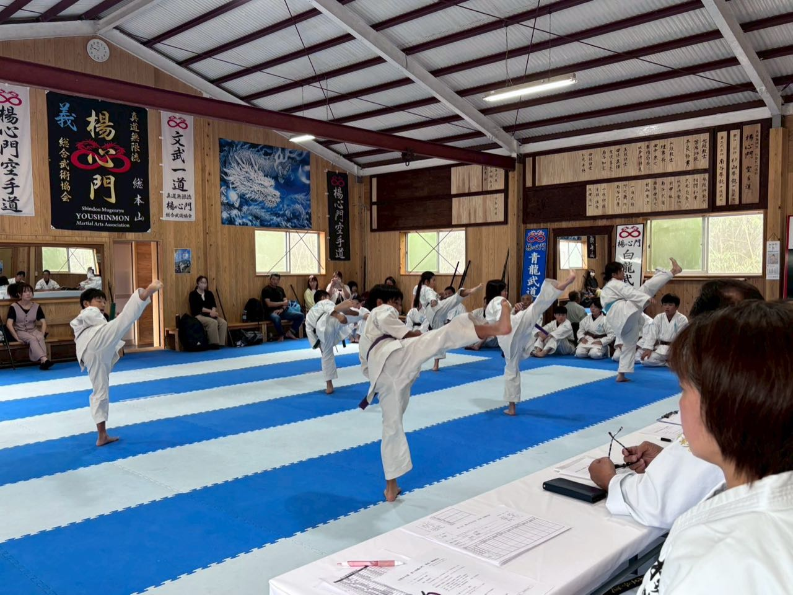
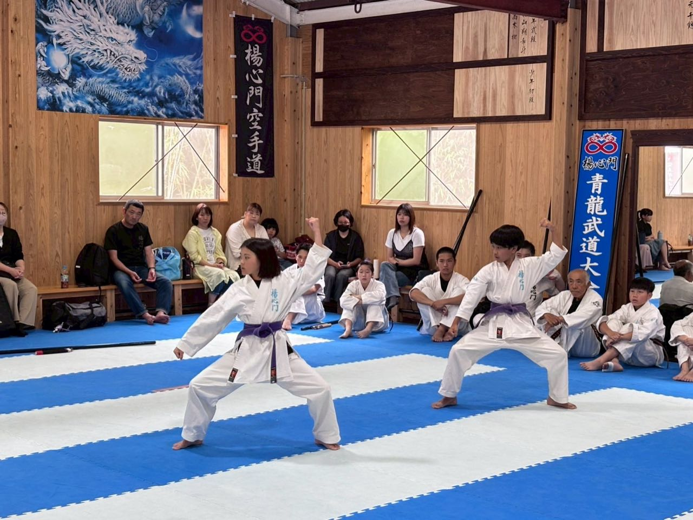
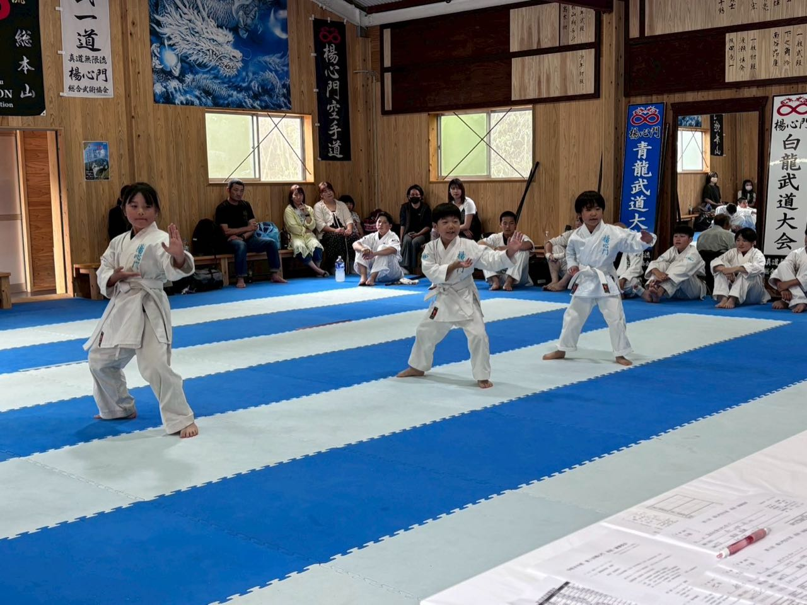
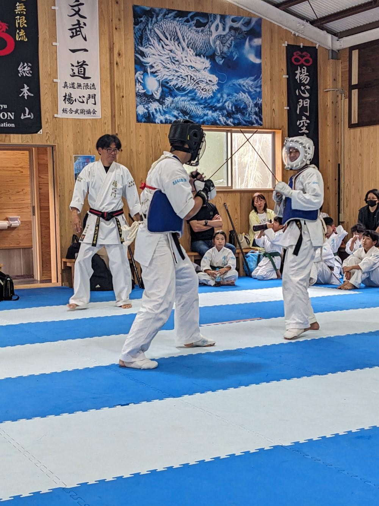
新たに【サイ術】を導入しました
今回の審査会にあわせ、楊心門に新たに サイ術※釵（さい）と呼ばれる三叉状の武器を用いた武器術 を取り入れました。審査後の研修では、指導にあたる先生方へサイ術をお伝えし、確かな手応えを得ることができました。今後、サイ術が門下に広く受け継がれていくことを願っております。
先生方の日々のご指導のもと、自覚をもって稽古に取り組む門下生が着実に増えてまいりました。これからも統一された楊心門空手道を目指し、門下一同、稽古に励んでまいります。